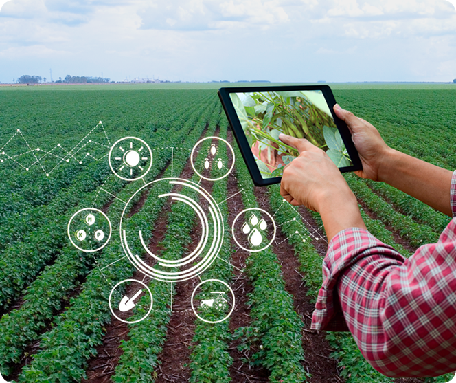
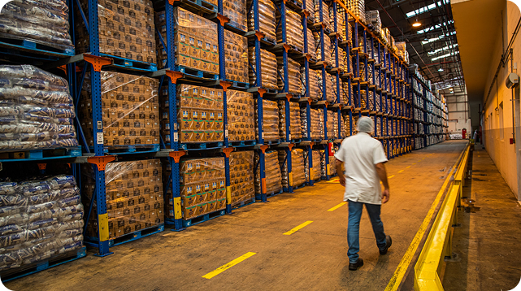
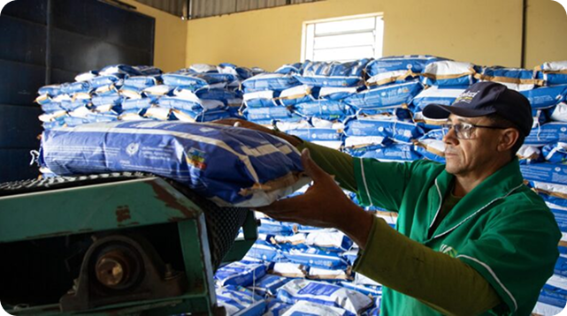
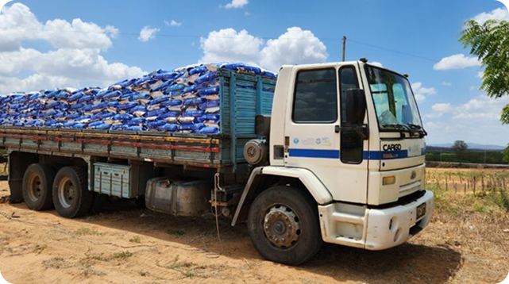
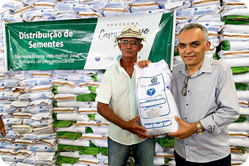
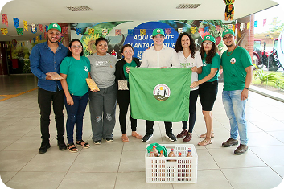
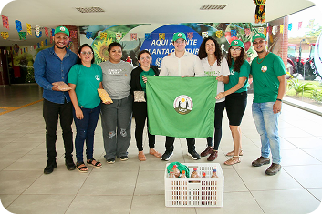

inicio
Agro • Transparência • Inovação
Grão em vida
Sobre
Galeria
Contato
Cadastro
Projeto
Programa Grão em Vida
Começar agora
Revolucionando a distribuição de sementes com tecnologia
Inovação que Transforma o Campo
Tecnologia que Faz a Diferença
Gestão de Estoque
Rastreabilidade em tempo real
Nossa Jornada em Imagens
Parceiros Estratégicos
Logística Conectada
Plataforma completa para gestão transparente e eficiente de recursos agrícolas. Rastreabilidade em tempo real, logística inteligente e impacto social mensurável.
Lotes Rastreados
Famílias
Atendidas
Atendidas
kg Distribuídos
Crescimento de
999
452
5200+
120%
Impacto em 2025
Somos uma plataforma tecnológica dedicada a revolucionar a gestão de recursos agrícolas. Combinamos expertise em agronegócio com soluções digitais de ponta para criar um ecossistema mais transparente e eficiente.
Utilizamos dados em tempo real para otimizar a distribuição de sementes, garantindo eficiência e menor desperdício de recursos.
Promovemos práticas agrícolas responsáveis, fortalecendo a agricultura familiar e reduzindo o impacto ambiental.
Apoiamos comunidades rurais com tecnologia acessível, capacitação e transparência em cada etapa da cadeia produtiva.
Sistema automatizado que controla entradas, saídas e validade, gera alertas de reposição e relatórios em tempo real.
- Controle de estoque: entradas, saídas e níveis mínimos/máximos.
- Alertas automáticos: avisos quando o estoque chega ao ponto de reposição.
- Controle de validade: gestão por lote e data de vencimento.
Oferece visibilidade total da cadeia de suprimentos, com controle automatizado de estoque e rastreamento em tempo real — garantindo disponibilidade constante e decisões mais ágeis.
- Rastreabilidade total e atualização em tempo real.
- Redução de desperdícios e perdas por vencimento.
- Processos logísticos mais eficientes e automatizados.
- Maior confiabilidade e controle sobre toda a operação.
Registros do impacto real da nossa tecnologia no campo
Juntos construindo o futuro da agricultura familiar
Utiliza métodos estatísticos e históricos de vendas para identificar tendências e planejar o reabastecimento de forma precisa.Gera notificações instantâneas quando o estoque atinge o ponto mínimo, genrecia historico de vencimento
- Redução de falhas e rupturas de estoque.
- Planejamento mais preciso e estratégico.
- Agilidade nas decisões operacionais.
- Maior visibilidade sobre toda a cadeia logística.
Soluções integradas para os desafios da agricultura familiar moderna





 

Inteligência no Campo
Sustentabilidade em Ação
Grão em vida
Navegação
Contato
Conecte-se
Tecnologia e inovação para transformar a agricultura familiar. Transparência, eficiência e impacto social real.
Início
Sobre
Projeto
Rua das Inovações, 123
Bezerros, PE - Brasil
contato@gv.org.br
+55 (81) 99999-9999
Bezerros, PE - Brasil
contato@gv.org.br
+55 (81) 99999-9999
Galeria

Entrar